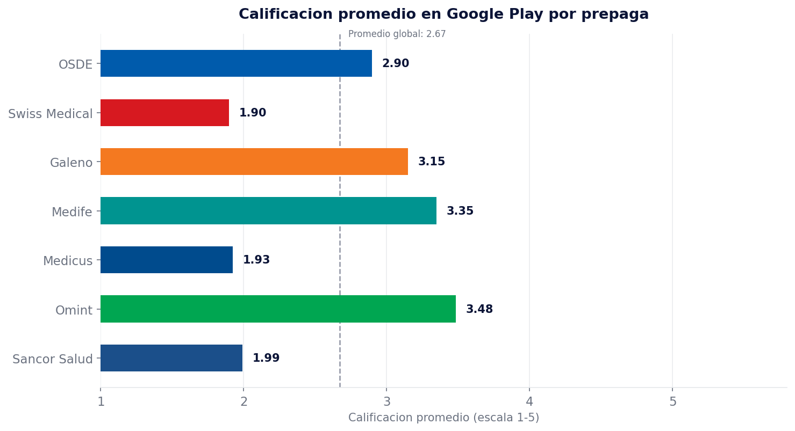
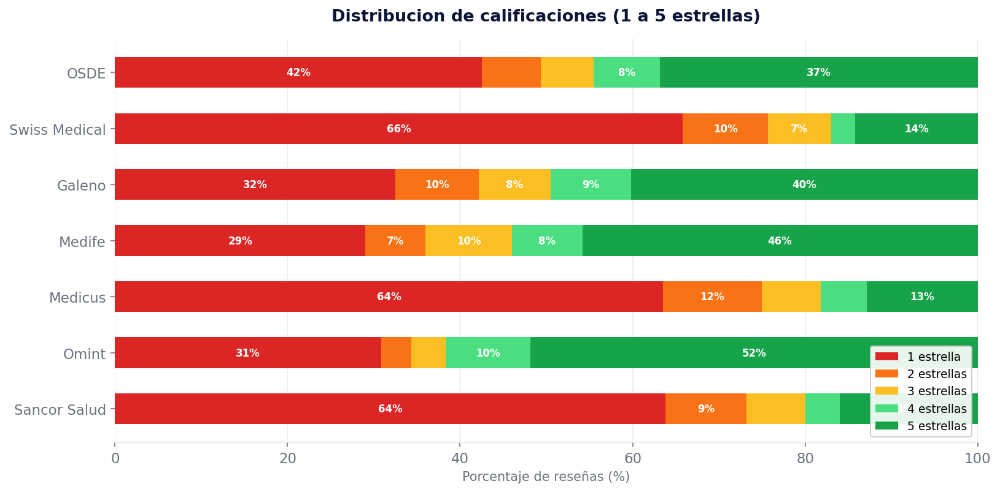
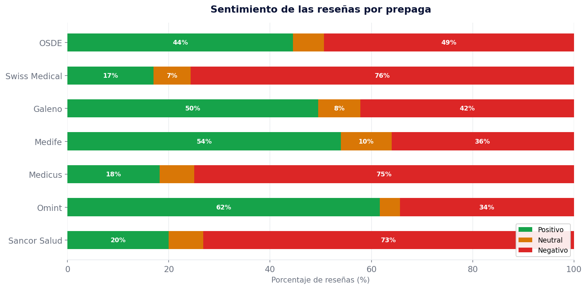
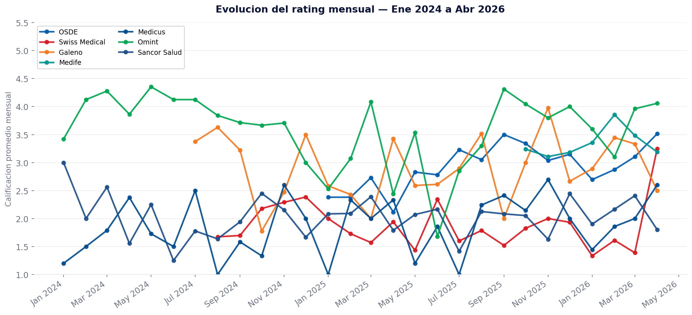
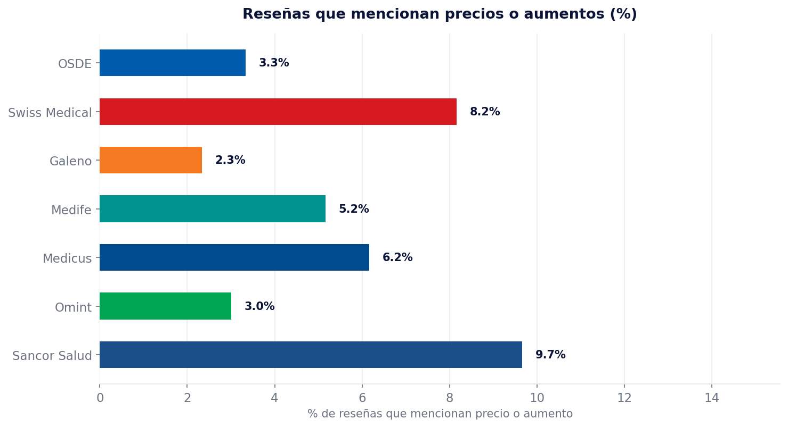
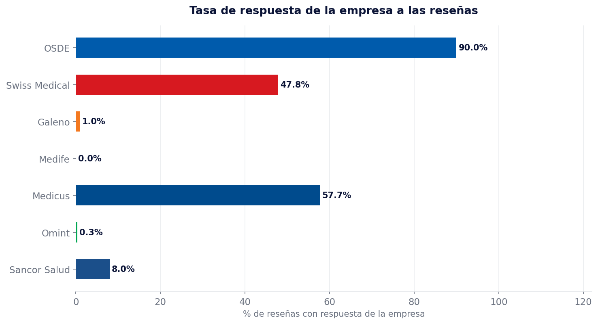
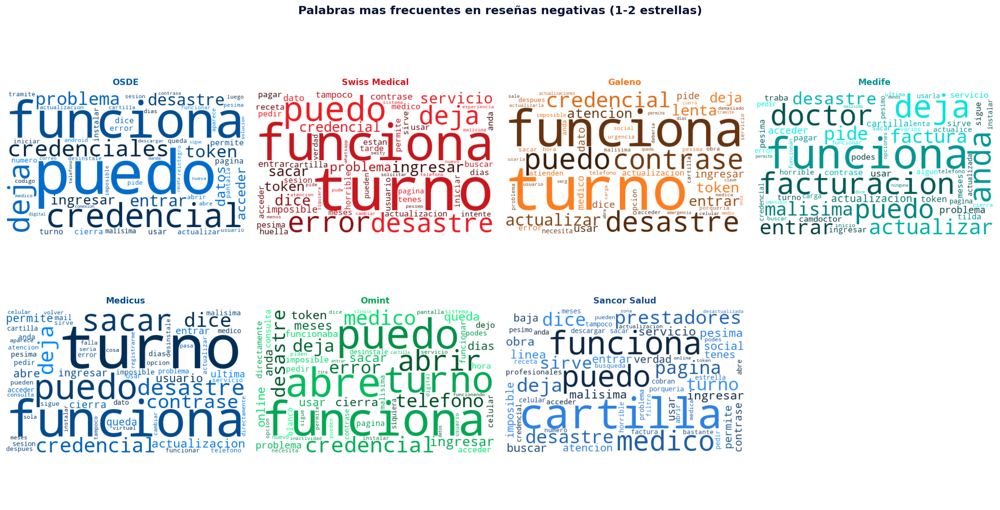

Contexto: el año de los aumentos
En diciembre de 2023, el gobierno de Javier Milei promulgó el DNU 70/2023, que desreguló el mercado de la medicina prepaga y eliminó el control estatal sobre los precios de las cuotas. Lo que siguió fue uno de los períodos de mayor convulsión en el sector: solo en enero de 2024 las cuotas subieron un 40%, en febrero un 36% adicional, y al llegar a abril el acumulado desde diciembre de 2023 ya superaba el 151%. A fin de año, el aumento total de 2024 rondó el 200%.
El Estado debió intervenir. El Gobierno intimó a siete empresas —OSDE, Swiss Medical, Galeno, Omint, Medifé, Hospital Alemán y Hospital Británico— a recalcular sus cuotas y reducirlas en hasta un 33%. Pero el daño sobre la percepción de los socios ya estaba hecho. Según relevamientos de la época, el 5% de los afiliados proyectaba darse de baja, y el 70% pensaba en algún tipo de cambio en su cobertura. Una de las prepagas más grandes del país reportó la pérdida de aproximadamente 25.000 socios en el transcurso de un año — cerca de 20 bajas por día.
En 2025 los aumentos continuaron, aunque a un ritmo mensual de entre 3% y 3,9%. El equilibrio precio-servicio quedó en el centro de la queja del socio: ¿vale lo que cuesta? Esa pregunta, formulada en reseñas públicas de Google Play, es el punto de partida de este análisis.
Este contexto importa porque las reseñas de Google Play no son solo una evaluación de una aplicación: son un termómetro de la experiencia completa de ser socio. Cuando alguien califica con 1 estrella la app de su prepaga, pocas veces lo hace por un bug técnico; más frecuentemente, lo hace porque acaba de recibir una factura que no puede pagar, o porque un trámite que tardó semanas en resolverse lo llevó a abrir el teléfono y descargar su frustración.
Una variable diferencial: la infraestructura propia
No todas las prepagas analizadas operan bajo el mismo modelo. Swiss Medical dispone de una red de centros médicos propios distribuidos en CABA y el Gran Buenos Aires, lo que le permite mayor control sobre la experiencia de atención presencial. Galeno cuenta con un gran centro propio en Palermo, y Medicus también opera con infraestructura propia en algunos puntos de la ciudad. OSDE, en cambio, trabaja exclusivamente a través de una cartilla de profesionales y clínicas adherentes, sin centros propios.
Esta variable es relevante desde una perspectiva de CX: tener infraestructura propia implica mayor capacidad de gestionar la experiencia del socio en todos los puntos del journey. Sin embargo, y como los datos mostrarán, esto no necesariamente se traduce en mejor experiencia percibida en el entorno digital.
Código de color — todos los gráficos
Metodología
El análisis se estructuró en cuatro fases secuenciales:
Recolección de datos
Scraping de reseñas de Google Play Store usando la librería google-play-scraper. Se recolectaron 600 reseñas por prepaga (ordenadas por las más recientes) para las 7 empresas seleccionadas, totalizando 4.200 registros. Los package IDs fueron verificados uno a uno previo al scraping para asegurar que se tratara de las apps oficiales de cada empresa.
Limpieza y preprocesamiento
Con Pandas se normalizaron fechas, se eliminaron reseñas vacías y se estandarizaron los nombres de las empresas. Las reseñas se clasificaron en tres categorías de sentimiento según la calificación: positivo (4–5 estrellas), neutral (3 estrellas) y negativo (1–2 estrellas). También se identificó si cada reseña tenía respuesta oficial de la empresa.
Análisis exploratorio y visualización
Con Matplotlib y Seaborn se generaron seis gráficos comparativos: rating promedio, distribución de estrellas, sentimiento, tasa de respuesta, evolución mensual y menciones a precios. Para este último se construyó un diccionario de palabras clave vinculadas a la cuestión precio/aumento, normalizando acentos para mayor cobertura.
Análisis de lenguaje natural (NLP)
Usando NLTK se aplicó limpieza de stopwords en español más un diccionario propio de términos no informativos del dominio (nombres de las prepagas, términos genéricos). Con WordCloud se generó una nube de palabras por prepaga a partir de las reseñas negativas (1–2 estrellas), permitiendo identificar los temas dominantes de la insatisfacción en cada caso.
Los datos hablan

Rating promedio en Google Play
El cuadro general ya revela una brecha significativa. Omint (3,48) y Medifé (3,35) se ubican en la parte alta, aunque lejos de un índice que podría considerarse satisfactorio. En el extremo opuesto, Swiss Medical (1,90) y Medicus (1,92) apenas superan 1 estrella promedio sobre 5. La línea punteada representa el promedio global entre las siete prepagas: 2,75 puntos.

Distribución de calificaciones (1 a 5 estrellas)
El gráfico de distribución revela la polarización del sistema. Swiss Medical, Medicus y Sancor Salud concentran más del 70% de sus reseñas en las categorías de 1 y 2 estrellas. Medifé y Omint, en cambio, muestran una distribución más equilibrada, con mayor presencia de calificaciones de 4 y 5 estrellas. La forma de estas barras dice tanto como el promedio: una distribución muy cargada hacia las extremidades bajas indica no solo insatisfacción, sino insatisfacción intensa.

Sentimiento de las reseñas
Agrupando las calificaciones en tres categorías de sentimiento, el panorama se confirma y se hace más legible. Tres prepagas —Swiss Medical (75,7%), Medicus (75,0%) y Sancor Salud (73,2%)— tienen casi tres cuartas partes de sus reseñas en territorio negativo. OSDE se ubica en una posición intermedia (49,3% negativo). En el extremo positivo, Omint (34,3%) y Medifé (36,0%) son las únicas que mantienen un porcentaje de reseñas negativas por debajo del 40%.

Evolución del rating mensual (Ene 2024 – Abr 2026)
La serie temporal muestra la volatilidad de la satisfacción a lo largo del período de análisis. Los meses posteriores a los aumentos más pronunciados de 2024 coinciden, en varios casos, con caídas en el rating promedio mensual. Es importante señalar que este gráfico refleja la percepción en la app, no necesariamente la experiencia médica en sí: los socios tienden a recurrir a las reseñas de Google Play como canal de queja cuando los canales formales de atención fallan o resultan inaccesibles.

Reseñas que mencionan precios o aumentos
Este gráfico conecta directamente el contexto macroeconómico con la voz del socio. Sancor Salud (9,7%) y Swiss Medical (8,2%) son las empresas donde más frecuentemente los usuarios mencionan palabras vinculadas a precios, cuotas o aumentos. En Sancor Salud, el impacto es especialmente llamativo si se tiene en cuenta que es una de las prepagas más grandes del interior del país, con una base de socios que depende fuertemente de convenios colectivos y planes individuales. Galeno (2,3%) y Omint (3,0%) son las que menos mencionan la variable precio en sus reseñas, lo que podría indicar que sus socios no priorizan ese factor en su experiencia — o que la relación precio-servicio es percibida como más equilibrada.

Tasa de respuesta de la empresa a las reseñas
Este es, desde una perspectiva de CX, el hallazgo más relevante del análisis. OSDE responde el 90% de las reseñas que recibe en Google Play. Es un número extraordinario para el sector y para cualquier industria. En el otro extremo, Medifé no registra una sola respuesta en los 600 registros analizados. Galeno y Omint están cerca de cero. Esta variable no mide directamente la calidad de la atención médica, pero sí dice algo sobre la cultura organizacional: cuán dispuesta está la empresa a escuchar, a responder, y a hacer de esa respuesta un hecho visible para el resto de los socios que leen las reseñas.

Palabras más frecuentes en reseñas negativas (1–2 estrellas)
Las nubes de palabras se construyeron exclusivamente sobre las reseñas de 1 y 2 estrellas, luego de aplicar limpieza de stopwords. Los términos dominantes revelan los ejes de la insatisfacción: palabras como turno, atención, espera, llamar, responde y cartilla aparecen recurrentemente. La queja del socio no es abstracta: es concreta, vinculada a experiencias de fricción en puntos específicos del journey — la gestión de turnos, la comunicación con el centro de atención y la accesibilidad a los prestadores.
¿Sobre qué hablan los socios?
Más allá de los gráficos comparativos, una pregunta central es qué temas concretos aparecen en las reseñas. A través de un análisis de palabras clave por categoría sobre las 4.200 reseñas, se identificaron ocho dimensiones temáticas recurrentes. La pirámide las ordena de mayor a menor frecuencia: cuanto más ancha la barra, más reseñas mencionan ese tópico. Pasando el cursor sobre cada capa se visualizan ejemplos de los términos que la componen.
Nota metodológica: dado que la fuente es Google Play, la dimensión "App y experiencia digital" está sobrerepresentada — muchas reseñas se escriben precisamente por un problema con la app. Las categorías restantes reflejan fricciones en la experiencia de servicio más amplia.
Hallazgos principales
Hallazgo 01
Swiss Medical, Medicus y Sancor Salud concentran los peores ratings del análisis, todos por debajo de 2/5, con más del 70% de sus reseñas en zona negativa. El hecho de que Swiss Medical y Medicus cuenten con infraestructura médica propia no se traduce en mejor percepción en el entorno digital.
Hallazgo 02
OSDE lidera la escucha digital con un 90% de tasa de respuesta. Es el único actor del análisis con una estrategia visible y sostenida de gestión de reseñas en Google Play. Esta postura, más allá de su impacto directo en el rating, comunica una cultura organizacional orientada al socio.
Hallazgo 03
Sancor Salud (9,7%) y Swiss Medical (8,2%) son las prepagas donde más frecuentemente los socios mencionan precios o aumentos. La queja económica está presente en la experiencia digital y no puede disociarse del contexto de aumentos acumulados de 2024.
Hallazgo 04
Omint y Medifé tienen los mejores ratings del análisis (3,48 y 3,35 respectivamente), a pesar de tener tasas de respuesta cercanas a cero. La satisfacción del socio, en estos casos, parece vincularse más a la experiencia en la atención que a la gestión del canal digital.
Hallazgo 05
Los temas dominantes de la insatisfacción son transversales al sector: turnos, tiempos de espera, atención telefónica y acceso a la cartilla de prestadores. La queja no es solo sobre el precio — es sobre la fricción en los momentos que más importan.
Hallazgo 06
Responder reseñas no garantiza mejores ratings, pero no responderlas dice algo sobre la organización. La brecha entre escuchar y mejorar es el mayor desafío de CX del sector.
Conclusiones
El sistema de medicina prepaga en Argentina atravesó entre 2024 y 2026 un período de presión extraordinaria: aumentos acumulados que afectaron el poder adquisitivo de los socios, intervención estatal, y un debate público sobre el valor del servicio que no ha terminado. Las reseñas de Google Play son, en ese contexto, un registro espontáneo e involuntario de cómo esa presión se procesa a nivel individual.
Lo que los datos muestran no es sorprendente en su dirección, pero sí en su intensidad. Que tres de las siete prepagas analizadas —empresas con cientos de miles de socios— tengan un promedio cercano a 2/5 en su canal digital más visible no es un dato menor. La app es, en muchos casos, el primer punto de contacto ante una necesidad urgente, y una experiencia deficiente allí tiene un costo que va más allá de las 1 o 2 estrellas: erosiona la confianza en la relación, especialmente en un contexto donde el costo de la cuota se percibe como alto.
El caso de OSDE merece una reflexión particular. Su tasa de respuesta del 90% no la convierte en la mejor rankeada del análisis, pero sí la posiciona como la única que ha decidido, de manera sistemática, hacer de Google Play un canal de escucha activa. Eso es una decisión de CX, no de IT. Y es una decisión que, a largo plazo, genera información, señales y oportunidades de mejora que sus competidores —especialmente Galeno, Medifé y Omint, que prácticamente no responden— simplemente no están aprovechando.
El sector necesita empezar a tratar la experiencia digital del socio como parte constitutiva de la atención médica, no como un apéndice. El turno que no se consigue, la respuesta que no llega, la app que falla justo cuando más se la necesita: son los momentos donde la relación entre la prepaga y su socio se define. No es una cuestión moral: es de negocio. Retener socios en un mercado desregulado es más caro y difícil que nunca.
Dashboard interactivo
El dashboard interactivo en Power BI estará disponible próximamente.